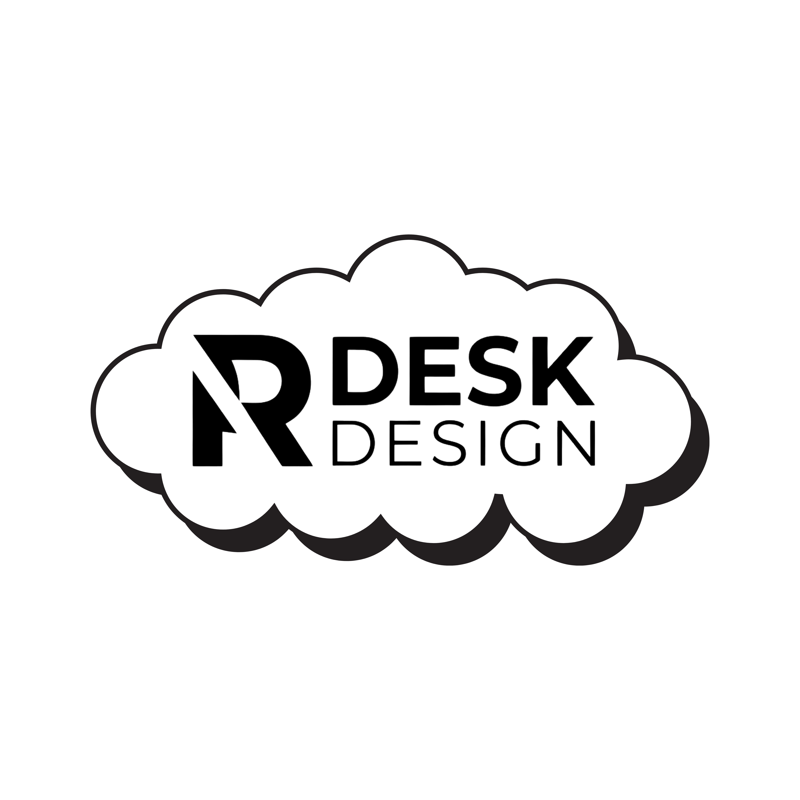

RDESK DESIGN
ID_DESIGNER: ROBERT LIMA
SYSTEM.ONLINE_START
> WAKE UP, NEO...
📐 Designer de
Ambientes
Da arquitetura volumétrica à engenharia física do objeto. Onde o bruto encontra o sofisticado. Você seguiu o coelho até aqui...
VOL.01
Escala Espacial
Design de ambientes. Controle de luz, matéria e ergonomia.
OBJ.02
Matéria Aplicada
Gravação metálica de precisão. Copos Stanley Cuia de alto padrão.
SYS.03
Gráfica Brutalista
Suporte tátil em Kraft. Engenharia reversa para o plano físico. Materias impressos.